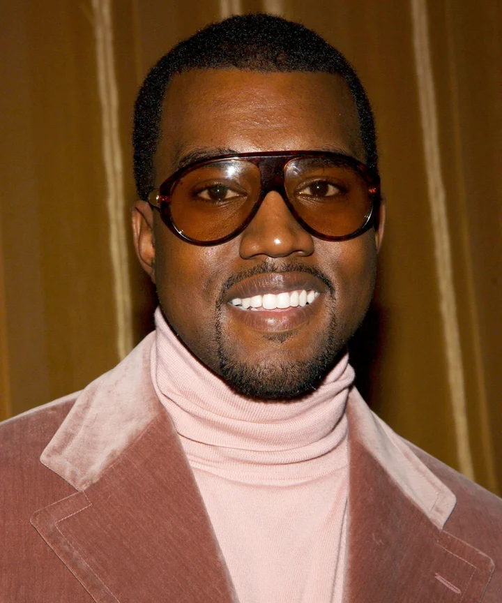

Kanye West
Chicago, IL
Artist • Producer • Designer • Entrepreneur
Professional Summary
Visionary artist, producer, fashion designer, and entrepreneur with over two decades of groundbreaking contributions to music, culture, and design. Known for redefining hip-hop production, innovating live performance, and building global brands across industries.
Career Experience
Founder & Creative Director — Yeezy 2015 – Present
- Built Yeezy into a gloablly infulential fashion brand.
- Partnered with Adidas to create multi-billion-dollar sneaker line.
Recording Artist & Producer — GOOD Music / Roc-A-Fella / Def Jam
2000 – Present
- Released 10+ studio albums including The College Dropout, Graduation, 808s & Heartbreak, My Beautiful Dark Twisted Fantasy, Yeezus, and Donda.
- Winner of 24 Grammy Awards and over 75 Grammy nominations.
- Pioneered new sounds in hip-hop by blending soul sampling, electronic music, gospel, and experimental production.
- Collaborated with global icons such as
Jay-Z,
Kid Cudi, and
Rihanna.
Founder — GOOD Music 2004 – Present
- Signed and developed artirist like John Legend, Kid Cudi, Pusha T, and Big Sean.
Fashion & Design Collaborations 2009 – Present
- Partnered with Louis Vuitton, Nike, Adidas, Gap, and Balenciaga.
- Recognized for blurring the line between streetwear and high fashion.
Film & Visual Projects 2009 – Present
- Directed short films (Runaway, Jesus Is King) and conceptualized visually ambitious stage designs.
- Known for innovative music video concepts and performance art.
Education
- Chicago State University (attended, English major)
- Self-taught producer and musician
Skills
- Music production & songwriting
- Development & creative direction
- Fashion & footwear designer
- Performance & stage designer
- Cross-disciplinary collaborationer
Awards & Honors
- 24 Grammy Awards (including Best Rap Album & Producer of the Year nominations)
- Billboard Artist of the Decade (2000s, runner-up)
- Multiple platinum and multi-platinum albums
Contact
Headshot
